Alien Technologies
Alien Technologies est une grande et nouvelle expansion pour Galaxy Trucker. Alien Technologies vous propose des missions solo intéressantes, ainsi que de nouveaux et nombreux éléments pour vos jeux en ligne, personnalisées et passées et jouées.

MISSIONS SOLO
Chaque mission a trois niveaux de la difficulté. Après terminant le premier niveau de la difficulté, vous pouvez continuer à une autre difficulté ou continuer à la prochaine mission.

LES NOUVEAUX NAVIRES
Design aléatoire de vaisseau
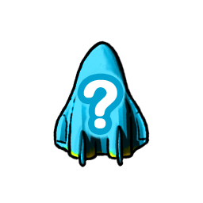Le design du vaisseau est créé aléatoirement au début du vol. Chaque vol sera différent, avec une nouvelle forme de vaisseau.
La forme est toujours symétrique.
Vos adversaires ont la même forme de vaisseau que vous.
Choix aléatoire de vaisseau
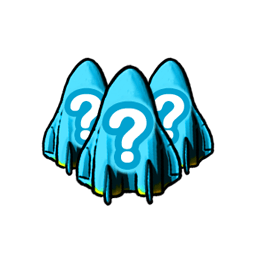Au début du vol, vous pouvez choisir parmi 3 design de vaisseaux aux forme symétriques.
Vos adversaires ont les mêmes possibilités que vous, mais ne feront pas forcément le même choix.
Vaisseau Organique
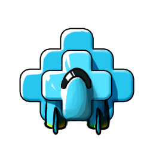Un vaisseau organique grossit pendant sa construction. Dès qu'un joueur soude un composant, les plans de TOUS les vaisseaux s'agrandissent (de nouveaux emplacements sont ajoutés dans la direction où pointent les connecteurs).
Cependant, le nombre total d'emplacements reste limité. Vous pouvez voir le nombre d'emplacements restants au-dessus de votre vaisseau. Lorsqu'il n'y en a plus, les plans de vaisseaux ne peuvent plus s'agrandir.

Vaisseau Amibe
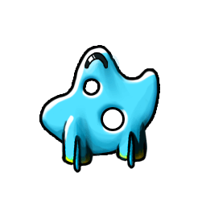Un vaisseau dont la forme est générée aléatoirement au début de la construction. Le design est souvent asymétrique et plein de trous. Certaines races d'extraterrestres raffolent de ce type de vaisseau.
LES NOUVELLES CARTES
Junkyard

Dans les dépotoirs, on peut échanger des ressources ou des évènements contre d'autres ressources, marchandises ou crédits.
Trou Noir
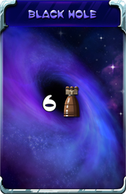
Pour échapper au trou noir, la puissance de vos moteurs doit atteindre ou dépasser celle du trou noir.
Si vous n'atteignez pas la puissance du trou noir, vous pouvez tout de même y échapper en abandonnant deux composants de votre vaisseau pour gagner à chaque fois un point de puissance.
Billards Stellaires
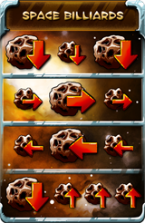Chaque joueur choisit une ligne et n'importe quel adversaire (tracez une flèche depuis la ligne choisie jusqu'à l'avatar de l'adversaire ciblé). L'adversaire doit affronter les météorites désignées.
Un même joueur peut se voir attribuer plusieurs lignes.
LES NOUVEAUX COMPOSANTS
Tuiles Combinées
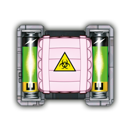Comme leur nom l'indique, les tuiles combinées combinent un type de cargo-container et des cellules d'énergie, ou deux types de cargo-container.
Canon Bi-directionnel

Une cellule d'énergie  est nécessaire pour activer le canon bi-directionnel. Sa puissance est égale à la somme de chacun des deux canons.
est nécessaire pour activer le canon bi-directionnel. Sa puissance est égale à la somme de chacun des deux canons.
Extraterrestres Cyan
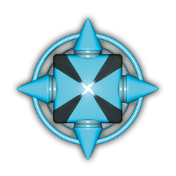Une cabine blanche connectée à un module de support de vie cyan peut accueillir deux astronautes humains ou un extraterrestre cyan. Cliquez sur la cabine pour faire votre choix.
Un extraterrestre cyan vous apporte son soutien, en fonction de la spécialisation que vous lui choisirez. Deux joueurs ne peuvent pas choisir la même spécialisation.
Un vaisseau ne peut accueillir qu'un seul extraterrestre cyan.
Extraterrestre cyan : les spécialisations
 Diplomate : Une fois par vol, vous pouvez échapper aux conséquences d'un ennemi OU une ligne d'une zone de combat. Puis le diplomate quitte votre vaisseau.
Diplomate : Une fois par vol, vous pouvez échapper aux conséquences d'un ennemi OU une ligne d'une zone de combat. Puis le diplomate quitte votre vaisseau.
 Technicien : Si vous avez au moins 1 cellule d'énergie
Technicien : Si vous avez au moins 1 cellule d'énergie  à bord, votre première utilisation d'énergie est gratuite (une fois par carte Aventure).
à bord, votre première utilisation d'énergie est gratuite (une fois par carte Aventure).
 Manager : Vos autres extraterrestres voient leurs effets augmenter de +1. A la fin du vol, gagnez 1 $, 3 $ ou 6 $ si vous avez à bord 1, 2 ou 3 extraterrestres.
Manager : Vos autres extraterrestres voient leurs effets augmenter de +1. A la fin du vol, gagnez 1 $, 3 $ ou 6 $ si vous avez à bord 1, 2 ou 3 extraterrestres.
 Marchand : A la fin du vol, recevez un crédit supplémentaire pour chaque marchandise rouge
Marchand : A la fin du vol, recevez un crédit supplémentaire pour chaque marchandise rouge  ou jaune
ou jaune  (même en cas d'abandon).
(même en cas d'abandon).
 Assureur : Vous ne payez pas la perte de composants.
Assureur : Vous ne payez pas la perte de composants.
Module de support de vie combiné 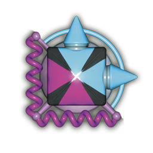
Une cabine blanche connectée à un module de support de vie combiné peut accueillir deux astronautes humains ou un extraterrestre mauve/brun ou un extraterrestre cyan/brun (en fonction du module). Cliquez sur la cabine pour faire votre choix.
Blindage Indestructible
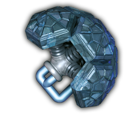Le blindage protège un ou plusieurs côtés du composant, qui ne peut plus être détruit par des météorites ou des canons, quel que soit leur taille.

Catapulte
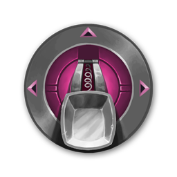La catapulte est une innovation majeure. Elle a besoin de munitions, qu'elle peut avoir en stock dès le départ. Au début du vol, tous les cargos-containers connectés à au moins une catapulte reçoivent une marchandise bleue gratuitement.
Catapulte contre les larges météorites
Catapult peut frapper un grand météorite volant avec l'un des quatre côtés de celui-ci ne couvre que sa propre colonne et ligne. C'est toujours pour cela elle doit être chargée produit connecté à celui-ci soute.

Catapulte contre les ennemis
Une catapulte augmente la puissance de vos canons de +1 si vous la rechargez avec un membre d'équipage ou une marchandise, et de +2 si vous la rechargez avec une marchandise rouge . Seuls les cabines et cargos-containers connectés à la catapulte peuvent être utilisés pour la recharger.

Vous pouvez même recharger la catapulte avec un extraterrestre mauve pour gagner +1, ainsi que son bonus habituel de +2.
Artefact Simple
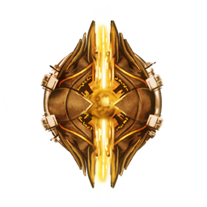Les artefacts extraterrestres peuvent être simples ou doubles. Un artefact simple transforme toute sa ligne ou toute sa colonne en zone morte. Son orientation indique la ligne ou la colonne affectée.

Artefact Double

Un artefact double transforme sa ligne ET sa colonne en zone morte.

La zone morte d'un artefact
Dans une zone morte créée par un artefact, aucun composant ne fonctionne. Aucun membre d'équipage, aucune cellule d'énergie et aucune marchandise ne peuvent y être chargés. Les canons, catapultes ou moteurs ne vous apportent plus de puissance, ne peuvent pas tirer, etc.
Cependant, les connecteurs, le blindage indestructible et les cargaisons spéciales continuent de fonctionner.
Un artefact ne peut pas être dans un autre des objets de la zone morte.
Moteur Canon

Fonctionne comme un canon combiné à un moteur. L'emplacement devant le canon et l'emplacement derrière le moteur doivent être libres. Ajoute de la puissance de canon et de moteur.

Cabine de Luxe

C'est une cabine classique, mais qui ne peut accueillir qu'1 seul astronaute VIP (et rien d'autre). Si vous perdez votre astronaute VIP, la cabine de luxe doit rester vide jusqu'à la fin du vol.
A la fin du vol, vous recevez une récompense pour chaque astronaute VIP mené à bon port (1$, 2$ ou 3$ en fonction du niveau de vol).